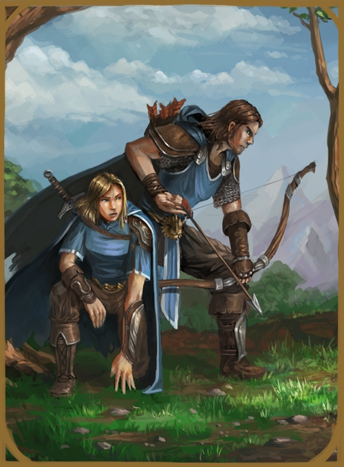

HUMAN - DAELDEN
MEDIUM HUMANOID
Humans are not the eldest, nor the strongest, nor the most agile of races,
yet they are the most common upon the continents. This is due to the fact that
humans are flexibly adaptive to most environments and opportunities, harshly
judge those that are not alike and spread really, really quickly. Add to that
a suprisingly high potential for great minds, and humans have risen to create
a dominant civilization upon the central lands of the realm.
Humanity has survived many ages but their history has often been rewritten,
destroyed and simply forgotten due to their warlike tendencies. Since their age
dawned many millenia ago, humanity spread and split into many variants, each
evolving depending on their settled area.
The last of the elderblood humans and the last descendants of the line of first
kings of humanity, the Daelden are blessed with long life from the blood of the
once civilization of Rorann. Daelden are known to be wise, patient and brave,
willing to step up and defy any evil that should arise. Though their once
glorious cities are now ruined and battered by time and their people are scattered
after the great dying, the Daelden lands and hearts are still resplendant to the
eyes of any traveler, even if they are in truth simply remnants of humanity's
once golden age.
|
 |
DAELDEN CULTURE
Daelden culture has not changed in centuries, still holding on to the elder ways
of a singular king that takes care of all of the people. His court is represented
by a line of families ranging back to the earliest recorded histories, though
with new families being newly appointed should a line end. The Daelden have very
little poverty or trouble, being that they are fewer than other human variations
and mostly kind to one another. Their once cities lie in ruins, overgrown and
taken over but for the few areas still being lived in. This makes many Daelden
roamers and rangers, wandering through the other human lands and lending aid
and aged wisdom where they can.
DAELDEN RELIGION
The worship of the light of Arenya reings supreme within the Daelden culture.
Representations of her splendor, as well as the many angelic statues of her
servants line the old cities, carving a beauty of olden times and of a greater
humanity who adored a goddess of life and light. Ul'gath, he who guides the
dead to their end, is also given place, often in graveyards and massive
mausoleums. The Daelden do not seem to easily deviate from this worship,
especially if they grew within the heart of their people, and as such,
even though worshipping another deity is not frowned upon, it is rather rare.
RELIGION - ARENYA, BREATH OF HOPE
| Status | Name | Realms |
|---|
| Goddess | Arenya | Healing/Light |
| God | Ul'gath | Silence/Darkness |
DAELDEN DIMORPHISMS
The male and female of the human species have very slight differences,
other than their visual distinctions. Males are of slightly stronger build
by nature, while the female tends to be more slender and graceful,
although both are able to ascend and surpass one another in these regards.
Beyond this, they are very much alike in their mind and abilities.
DAELDEN STATISTICS
ADULT MALE
GENERAL ATTRIBUTES
| AGE | HEIGHT | SIZE | SIGHT |
| 18-70 | ~5'11'' | Medium - 1x1 | -/6/0 |
MOVEMENT
| RUNNING | CLIMBING | SWIMMING | FLYING |
| 5 - Perfect | 2 - Rough | 2 - Rough | - |
ABILITY SCORES
| Wnd | Con | Vit | Str | Agi | Dex |
|---|
| 13 | 10 | 7 | 10 | 10 | 10 |
| +7 | +2 | +2 | +3 | +3 | +3 |
| Ins | Int | Will | Wis | Cha | Ele |
|---|
| 7 | 10 | 12 | 11 | 11 | 10 |
| +2 | +6 | +5 | +5 | +5 | +3 |
NATURAL WEAPONS
| WEAPON | TYPE | MIGHT | DAMAGE | ADDITIONAL |
| Fists/Feet | +0 | 1 | Non-lethal and takes 2 category differences
to increase damage. |
NATURAL WEAPONS
| WEAPON | TYPE | MIGHT | DAMAGE | ADDITIONAL |
| None | - | - | - |
ADULT FEMALE
GENERAL ATTRIBUTES
| AGE | HEIGHT | SIZE | SIGHT |
| 18-70 | ~5'07'' | Medium - 1x1 | -/6/0 |
MOVEMENT
| RUNNING | CLIMBING | SWIMMING | FLYING |
| 5 - Perfect | 2 - Rough | 2 - Rough | - |
ABILITY SCORES
| Wnd | Con | Vit | Str | Agi | Dex |
|---|
| 13 | 10 | 7 | 9 | 10 | 10 |
| +7 | +2 | +2 | +3 | +3 | +3 |
| Ins | Int | Will | Wis | Cha | Ele |
|---|
| 7 | 10 | 12 | 11 | 11 | 11 |
| +2 | +6 | +5 | +5 | +5 | +3 |
NATURAL WEAPONS
| WEAPON | TYPE | MIGHT | DAMAGE | ADDITIONAL |
| Fists/Feet | +0 | 1 | Non-lethal and takes 2 category differences
to increase damage. |